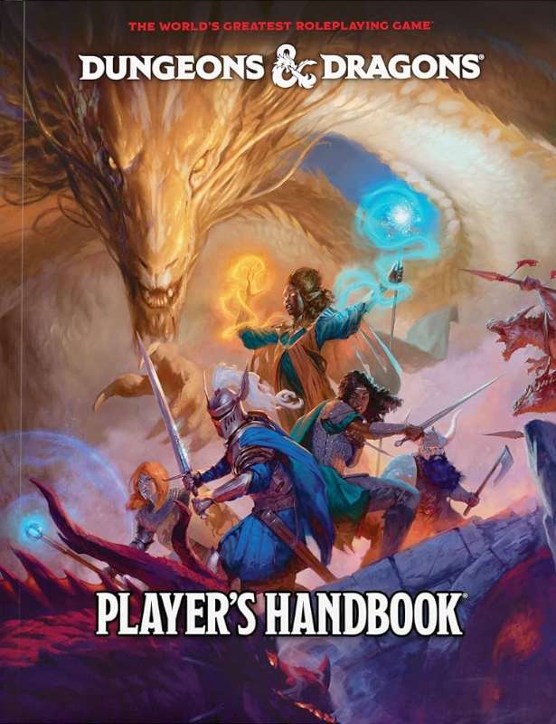

Uma Experiência de Imaginação e Aventuras
RPG de mesa é um jogo de interpretação de personagens onde os participantes assumem papéis em narrativas colaborativas. Utilizando dados, fichas e muita criatividade, os jogadores exploram mundos fantásticos, resolvem desafios e constroem histórias épicas. Um mestre de jogo (ou narrador) guia a trama, apresentando situações e interpretando o mundo ao redor dos personagens.
Cada sessão de RPG é única, moldada pelas escolhas dos jogadores e pelas regras específicas de cada sistema de jogo. Seja enfrentando dragões, desvendando mistérios futuristas ou sobrevivendo a cenários de terror, o RPG é uma das formas mais ricas de entretenimento interativo.
Sistemas de RPG Famosos
Existem centenas de sistemas diferentes no mundo do RPG, cada um focando em diferentes estilos de histórias. Conheça três sistemas muito conhecidos, cada um com uma temática única:
2°

Cyberpunk 2020
- Tema: Futurista, distópico, tecnologia e rebeldia.
- Luta contra corporações opressoras.
- Estilo sombrio e cheio de ação.
1°
Dungeons & Dragons
- Tema: Fantasia medieval com heróis, dragões e magia.
- O sistema mais clássico e popular do mundo.
- Aventuras épicas em mundos vastos.
3°

Call of Cthulhu
- Tema: Terror cósmico baseado em H.P. Lovecraft.
- Investigações sobrenaturais e insanidade.
- Atmosfera de suspense e mistério.
Como Jogar RPG de Mesa
Jogar RPG de mesa é uma experiência divertida e acessível para qualquer pessoa. Você cria um personagem, com sua história e habilidades, e se junta a outros jogadores para viver aventuras guiadas por um mestre de jogo.
Não é preciso ser um ator ou ter experiência prévia. Basta usar a imaginação e descrever o que seu personagem faz. As decisões e ações são muitas vezes decididas com o lançamento de dados, adicionando emoção e imprevisibilidade às partidas.
Prepare sua ficha de personagem, seus dados e venha viver grandes histórias!


Gerador de Dados
Use nosso gerador de dados virtual para suas campanhas de RPG!